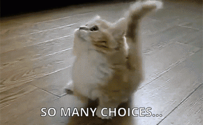

Credit: Eberhard Grossgasteiger from Pexels
開始看各大學以後，就會發現美國大學們都有頗多種申請方案，那不同的申請方案也都會有它自己的優、缺點，因此就讓我們來看看各種申請方案 :)
在開始前先小小聲明一下，即便各大學的申請方案可以被歸為以下幾類，蠻多學校都還是會有自己的限制及例外，所以捧油們還是要上校網確認一下。這裡只是希望給大家一些概念:)
如果將美國大學申看成有先後兩輪的話，那可以將ED1、REA、SCEA、EA歸類為第一輪，而ED2、RD歸類為第二輪，而Rolling則是隨時都可以申請。
Early Decision (ED)
這種申請的概念就是，您會跟這間所申請的大學綁在一起，您如果被錄取了就一定會去就讀。在申請ED的同時，您也可以送出其他學校EA或RD的申請，只是一但透過ED錄取某間大學您就要撤回其他學校的申請。ED的好處就是錄取率通常會提高許多，而不同學校在ED方面錄取率的提高程度也會有所差異。舉Brown University來說，它的Class of 2025中ED錄取率約為16%，而它在RD中的錄取率為3.5%。不過ED確實有個頗大的壞處，就是上了就一定得去就讀，所以如果要ED某間大學，那麼這間大學應該要是您心目中的第一志願。好的那因為大家可能都有奸詐狡猾的一顆心，想說如果上了不去念會如何嗎？頗多美國大學們會互相分享退出ED的學生名單，所以如果申請者放棄某間學校的ED錄取，他頗有可能在其他間學校也落榜，因為這些學校都會知道他利用了ED的優勢，在知道ED的要求下最後卻不去就讀，所以結論就是別做一些shady的事情。多數美國大學的ED1截止日期在十月底、十一月初，而ED2截止日期在一月初。ED1若沒有被錄取可再申請其他校的ED2。
Restrictive Early Action (REA) / Single Choice Early Action (SCEA)
這類的申請會規定您在第一輪中不能ED其他大學或EA任何私立美國大學(可以EA公立大學)，不過若被申請的大學錄取了也不一定要去就讀。這種申請方案的好處就是錄取率會高一點點，例如Yale University在Class of 2025中REA的錄取率為10.5%，而它在RD中的錄取率為4.6%。另個好處是就算被大學錄取了也不一定得就讀，那當然壞處就是您在第一輪申請中就不能申請其他大部分的美國大學。REA/SCEA的申請截止日期大多是十月底、十一月初。
Early Action (EA)
這種申請的限制就小非常多。大部分推出EA的大學唯一限制就是您不要違反其他學校ED、REA的規定來申請就歐給ㄌ。EA的好處就是可以申請其他有提供ED、EA的學校，那被EA的大學錄取了也不一定要去唸。不過EA的小小壞處就是它對錄取率真的沒有什麼幫助，這種方案其實就跟最正常的RD申請差不多，只不過早一些送出申請早一點得到結果。多數EA的大學申請截止日期為十月底、十一月初。
Regular Decision (RD)
這是最正常(?)的申請，沒有什麼特殊限制，各種學校都可以投，那通常也會是最晚收到回覆的。在收到各學校RD錄取信及助學金金額後，可以再自由思考要選哪一間大學。如果某間大學只提供以上這幾種申請方案中的一種，那通常就會是RD。(例如加州大學系統就只有提供RD) 大部分美國大學的RD截止日期都會在一月初~二月初。
Rolling Admission (Rolling)
雖然108課綱的滾動式修正好像被各種亂打槍，但美國大學的滾動式申請依然是十分不錯ㄉ :) Rolling申請就是您隨時想送就可以送出，那通常2~6週後就會收到結果。另外，有些大學會提醒說如果想角逐學術獎學金的話，要在某個期限內送出(通常會是11、12月)。儘管Rolling的學校確實是只要還有名額就會接受申請，不過早一點送出錄取機率會比較高，畢竟那時名額還很充沛審查委員可能也比較寬容。多數提供Rolling Admission的學校在九月初就開始接受申請。